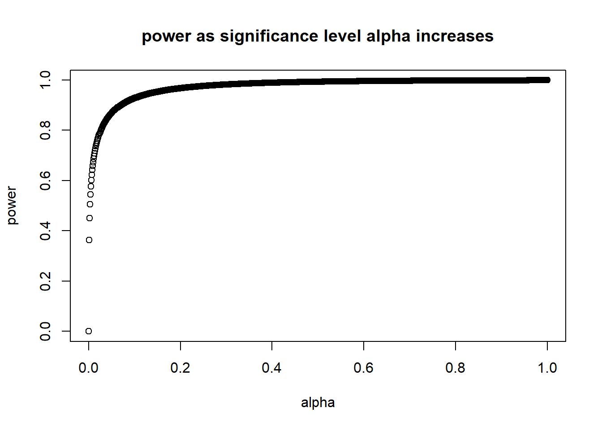
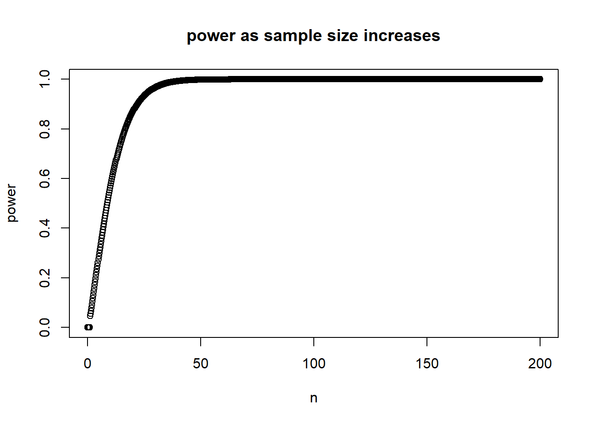
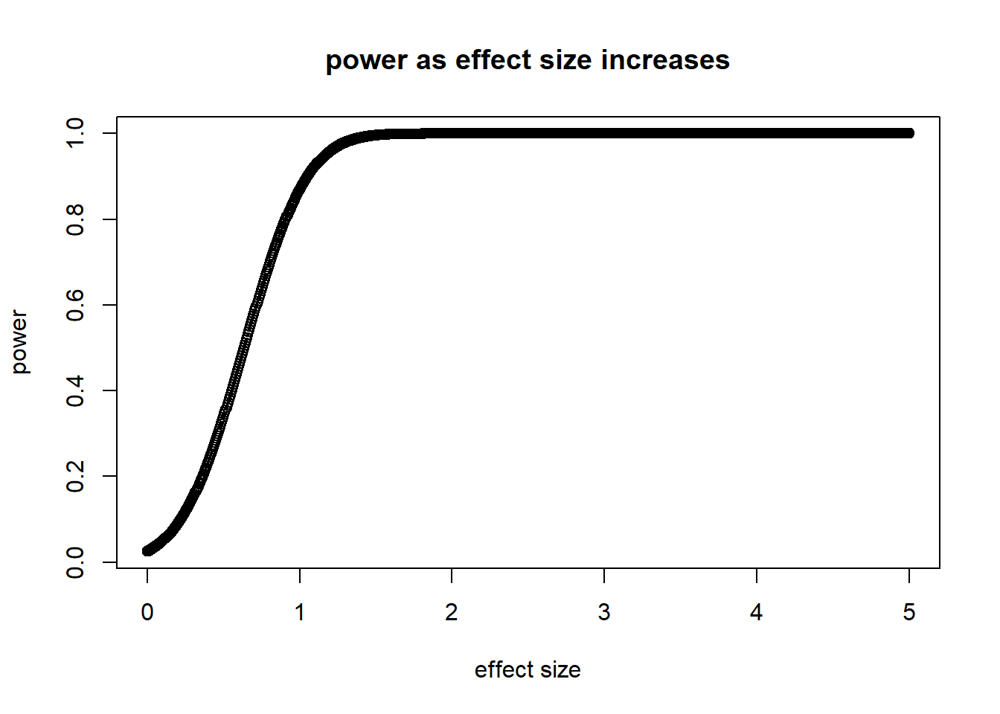

Students can correctly identify type 1 and 2 errors.
Students understand the meaning of alpha and beta in the context of statistical errors.
Students know what factors increase the likelihood of each error, and what factors(non statistical use of this word) increase power and p value.
Students can identify relative power levels and p values from visual data alone
Concepts:
Type 1 Error
Type 2 Error
Significance level alpha
beta
Power 1-beta
Intuition Tools:
T1ER T2EFTR
Lesson Material:
The lesson will start with the terminology being defined, students will be provided with the box chart of errors and a graph of two distributions showing where alpha and beta sit.
TYPE 1 ERROR: The null is true, you reject the null hypothesis
TYPE 2 ERROR: The alt is true, you fail to reject the null hypothesis
ALPHA: Probability of rejecting the null hypothesis when the null is true. For a p value standard of 0.05, alpha is 0.05] ; AKA probability of type 1 error.
BETA: Probability of failing to reject the null hypothesis when the alt is true ; AKA, the probability of a type 2 error.
POWER: Likelihood of detecting an effect (rejecting the null hypothesis) if the alt is true. Power = 1-beta. AKA, probability of NOT making a type 2 error.
COMMON VARIANCE: The variance shared by two distributions when they have the same variance
While wrote memorization of the error terminology may seem pointless when it can just be checked, these terms come up surprising amount, so I will let instruct them to look carefully at the vocab and variables.
To make memorization easier, I will show the T1ER T2EFTR method, where T1ER stands for Type 1->Reject, as you erroneously rejected the null. This looks like like “TIER”. The next one is T2EFTR, which stands for Type 2->Fail To Reject, as you are erroneously failing to reject the null. This, if written weirdly, looks like “TLEFTR” (teh-lef-ter), which inst a word, but its works well to memorize regardless for some reason.
The formula for power of two independent samples with equal variance requires a few variables:
significance level alpha
sample size
the sample type (e.g. two sample)
the effect size
We haven’t seen the effect size, but we can calculate it with the following formula.
\(\mu_{1}=\) mean of your alternative distribution
\(\mu_{2}=\) mean of your null distribution
\(\sigma=\) common variance of the two distributions
To see the impact of the variables on the power level, the following charts were made by adjusting one of the variables and holding all other variables constant:
numdf <-data.frame( inp <-seq(0,1, length=1000))diff <-10sd <-sqrt(100)effect <- diff/sdnumdf$yy <- (power.t.test(n=20, d = effect, sig.level = numdf$inp, power =NULL, type ="two.sample"))$powerplot(numdf$inp, numdf$yy,ylab="power",xlab="alpha", main="power as significance level alpha increases", )

numdf <-data.frame( inp <-seq(0,200, length=1000))diff <-10sd <-sqrt(100)effect <- diff/sdnumdf$yy <- (power.t.test(n=numdf$inp, d = effect, sig.level =0.05, power =NULL, type ="two.sample"))$powerplot(numdf$inp, numdf$yy,ylab="power",xlab="n", main="power as sample size increases", )

numdf <-data.frame( inp <-seq(0,5, length=1000))diff <-10sd <-sqrt(100)effect <- diff/sdnumdf$yy <- (power.t.test(n=20, d = numdf$inp, sig.level =0.05, power =NULL, type ="two.sample"))$powerplot(numdf$inp, numdf$yy,ylab="power",xlab="effect size", main="power as effect size increases", )

Assessment
ERRORS: Students will be given an example of an experiment, a conclusion, and the truth, and they will be asked to put the example in one of 4 boxes on the type of error/correct conclusion chart.
P AND POWER: Students will be given 4 variables {meanx-nullmean common variance, significance level, sample size}. The experiment will suggest one set up with numerical values where all values are held constant except one (so one experiment will have a diff=10, var=1,a=0.05, and n=10, while the other has diff=10, var=1,a=0.05, and n=20, and students will have to chose the one with the higher power level.
As an important review, students will also be given a situation with the same variables stated, and asked to predict which one has a lower p value. (NOTE: the alpha will not effect the p value)
Next, I will give them two distributions on the same chart alongside another two distributions on the same chart. The distributions will minimal labels. From this, the students will have to select which charts have lower p values, and which charts have higher power levels
This will hopefully give them a conceptual understanding of the p value and power so that they can predict power levels and p value without needing all of the data.
An example of some charts that will be given to them for the minimal information portion can be found below (circumstance b has a higher power and lower p value)